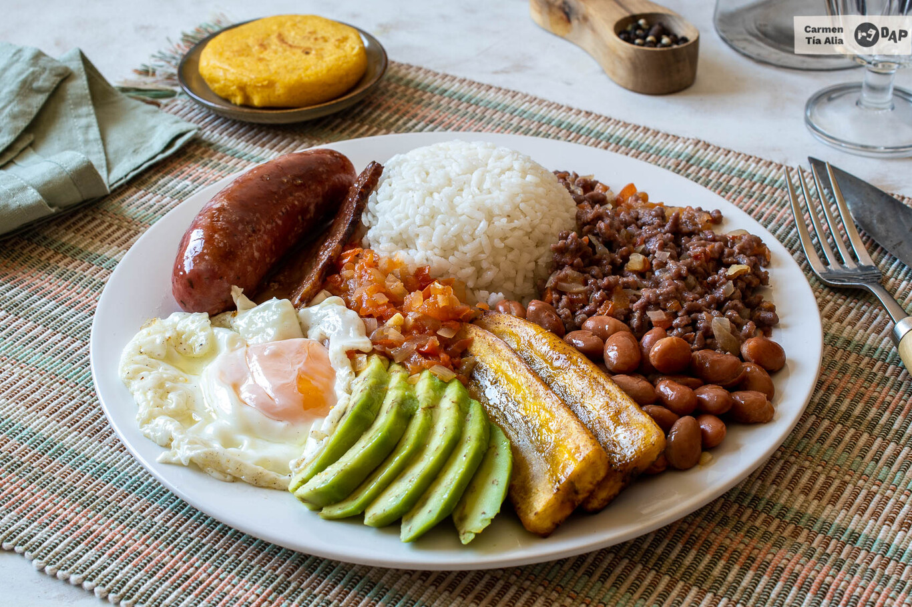

Bandeja Paisa.
Descripción.
La bandeja paisa es un plato típico de Colombia, especialmente de la región de Antioquia, que representa una verdadera explosión de sabores y texturas. Este contundente plato es como un abrazo en cada bocado, una celebración de la gastronomía campesina colombiana. La bandeja paisa tradicionalmente se sirve en una bandeja de barro y combina una variedad de ingredientes que varían según la región, pero por lo general incluye: frijoles cargadores, arroz blanco, chicharrón, carne asada, morcilla, huevo frito, plátano maduro frito, aguacate, arepa y una porción generosa de aguacate. Cada componente aporta su propio sabor y textura, creando una sinfonía de sabores que deleita el paladar.
ingredientes.
- Carne para asar (lomo, solomillo)
- Chicharrón
- Morcilla
- Arroz
- Frijoles cargadores
- Plátano maduro
- Aguacate
- Huevos
- Arepas
- Cebolla
- Ajo
- Hoja de laurel
- Sal
- Pimienta
- Aceite
Pasos para la preparación del plato.
- Prepara los frijoles: Cocina los frijoles con suficiente agua, sal y un poco de cebolla, dejando que hiervan hasta que estén blandos.
- Prepara el arroz blanco: Lava el arroz y cocina en agua con sal y aceite hasta que esté seco y bien cocido.
- Fríe la carne: Adoba la carne de res con sal y pimienta al gusto, y fríe en una sartén hasta que esté dorada y cocida.
- Fríe el chicharrón: Corta la panceta de cerdo en trozos pequeños y fríelos en su propia grasa hasta que queden crujientes.
- Fríe el huevo y las tajadas de plátano: En una sartén, fríe un huevo hasta que la clara esté cocida y la yema ligeramente líquida. Fríe las tajadas de plátano maduro hasta que estén doradas.
- Calienta las arepas: Cocina las arepas en un sartén o en el horno hasta que estén calientes y ligeramente doradas.
- Arma la bandeja paisa: En un plato grande, sirve una porción de frijoles, una porción de arroz, la carne, el chicharrón, el huevo frito, las tajadas de plátano, la arepa y un aguacate cortado en rodajas.
- Agrega hogao (opcional): Si deseas, puedes añadir un poco de hogao encima de los frijoles o como acompañamiento para intensificar el sabor.